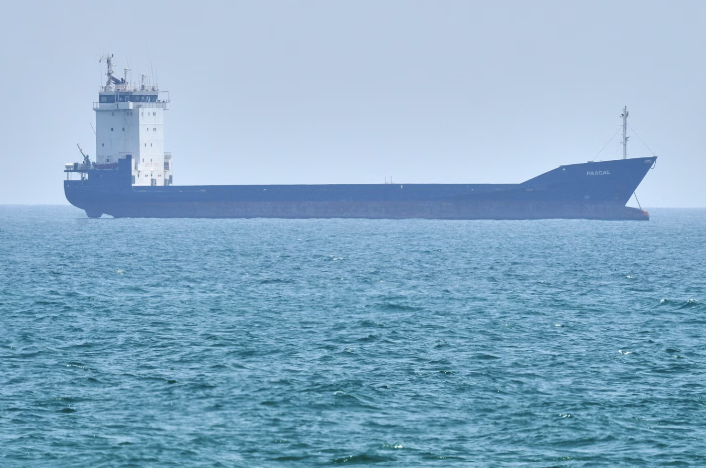

Seafarer talks being trapped on the Strait of Hormuz: "There is no safe place here"
By Desiree Adib

As the world awaits a resolution on the fate of the Strait of Hormuz -- one of the most vital global trade routes -- the seafarers who have been stranded for weeks aboard ships and tankers on either side of the waterway are desperate for answers.
Nearly 20,000 people on some 2,000 vessels are currently trapped in the Persian Gulf, waiting for a passage that may not come anytime soon, according to the International Maritime Organization.
"It's been almost 50 days since the war started, and uncertainty is our biggest fear," one seafarer told ABC News, speaking anonymously for their safety. "Not knowing if we are going to get out of this situation alive is our main concern - because it doesn't matter where you are in the Gulf, there is no safe palce here."
The seafarer said they have been waiting to cross since Feb 28, the day the U.S.-Israeli war on Iran started and the moment vessel owners effectively halted traffic through the strait. Insurance companies stopped covering ship in the region almost immediately, bringing maritime traffic to a standstill on a waterway that normally carries as much as 20% of the world's crude oil and refined petroleum products.
"There are several different dangers here," the seafarer explained. "This is a very narrow, enclosed strait. There are reports of sea mines - we don't know if they're real or not, but it doesn't really matter. Once the idea takes hold that mines might be there, no ship wants to pass. That's the first issue. The second is that in such a confined space, we're talking about the possibility of drones, unmanned vehicles, ballistic missiles - there are so many ways we could be attacked that I don't think the U.S. military or any other military can realstically protect us."
The fallout on global markets has been severe. The longer the strait remains closed, the deeper the energy crisis will cut, particularly across Asia, which depends heavily on Gulf oil exports
High-stakes negotiations between Iran and the United States continue, with both sides debating the waterway's reopening, but the only fact that matters to those waiting is that the Strait of Hormuz is still closed, and the threat of attack is likely to keep it that way.